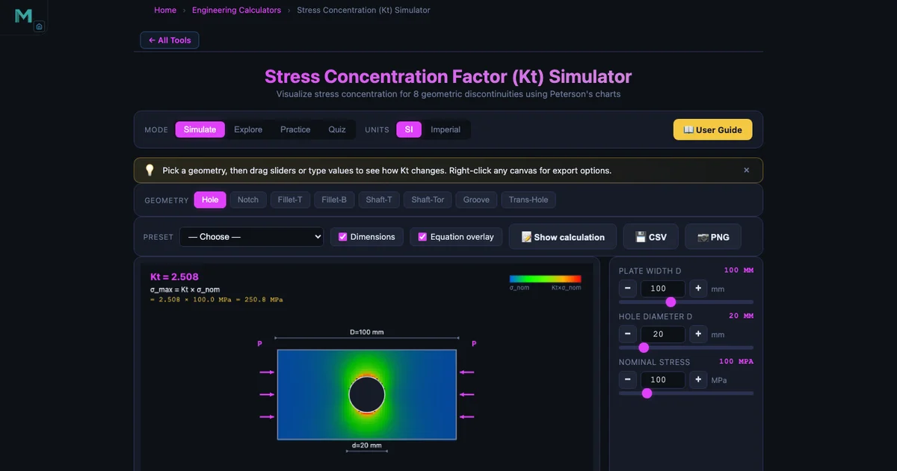
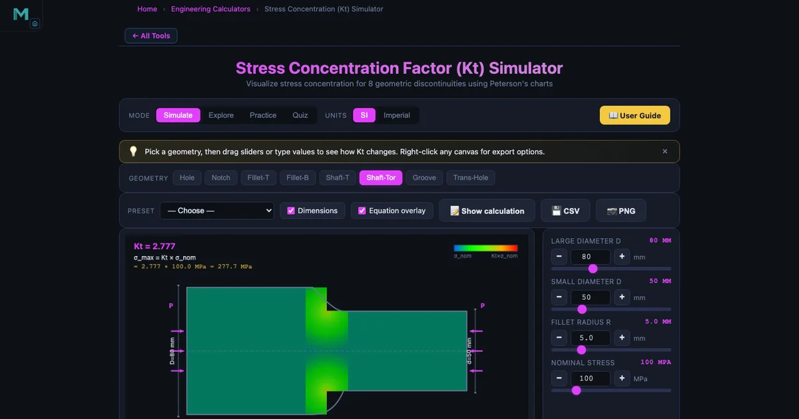

Stress Concentration Factor Kt — A Practical Mechanical Design Guide

- The stress concentration factor Kt is a dimensionless, geometry-only multiplier giving the peak local stress at a discontinuity: σ_max = K_t × σ_nom.
- A small circular hole in a wide plate gives Kt ≈ 3.0 (Kirsch solution); for d/D = 0.2 it drops to ≈ 2.5, so 100 MPa nominal becomes 250 MPa at the hole edge.
- For fatigue, use the fatigue factor Kf = 1 + q(K_t − 1), where notch sensitivity q runs 0 to 1; lower Kt by enlarging fillet radius, adding relief grooves, or shot peening.
Every mechanical component has at least one place where the geometry changes — a drilled hole, a keyway, a shaft step at a bearing seat. At each of those places, stress doesn’t just go up a little. It spikes. That spike is captured by the stress concentration factor Kt, a dimensionless multiplier that says how much higher the peak stress is compared with what a simple load-over-area calculation would predict. Get it wrong in a static design and you’ve added an invisible safety margin tax. Get it wrong in a fatigue design and you’ve got a crack initiation site that will shorten component life by an order of magnitude.
This guide covers everything you need to apply Kt confidently: the physical meaning, the key geometric cases, the worked example with numbers you can check yourself, and the connection to the fatigue stress concentration factor Kf. Use the Stress Concentration Simulator alongside it to explore the curves interactively.
What Kt Actually Means — Force Flow Lines
The clearest way to understand Kt is through the idea of force flow lines — imaginary lines that represent how stress travels through a loaded body. In a smooth, uniform bar under tension, those lines are evenly spaced and parallel. They’re like water flowing at constant speed through a straight pipe.
Now punch a hole in the bar. The force flow lines can’t go through the hole, so they crowd around it — just like water speeding up as it squeezes through a narrow channel. The more abrupt the geometric change, the tighter the crowding, and the higher the local stress. A sharp 90° corner is the limiting case: the lines have nowhere to go but infinitely tight, which is why a true zero-radius corner gives a theoretically infinite Kt. In the real world, every machined edge has some small radius, and that finite radius is what keeps the stress finite — but it can still be very high.
The fundamental relationship is simple:
\[\sigma_{\max} = K_t \times \sigma_{\text{nom}}\]
where \(\sigma_{\text{nom}}\) is the nominal stress calculated from the net cross-section using basic formulas (force divided by net area, or bending moment divided by section modulus at the net section). Kt is purely a function of geometry — shape ratios, not material properties. A steel component and an aluminium component of identical geometry have the same Kt.
Plate with a Central Hole — The Benchmark Case
The circular hole in a wide plate under uniaxial tension is the foundation of stress concentration theory. Kirsch’s exact elasticity solution (1898) shows that as the hole diameter d becomes vanishingly small relative to the plate width D (i.e., d/D → 0), the tangential stress at the hole edge is exactly three times the applied stress:
\[K_t \to 3.0 \quad \text{as } \frac{d}{D} \to 0\]
This is one of the most important numbers in stress analysis. It means that even a tiny hole — one you might dismiss as negligible — triples the local stress at its edge. For the default simulator geometry (D=100 mm, d=20 mm, d/D=0.2), Kt ≈ 2.5, because as the hole grows the net section shrinks and the nominal stress calculation already captures some of the effect.
The full relationship follows Peterson’s curve fit. As d/D increases from 0 toward 1, Kt decreases from near 3.0 toward lower values, but the actual peak stress σmax doesn’t necessarily fall — because σnom rises as the net area shrinks. Designers often misread the chart: a lower Kt at larger d/D doesn’t mean a safer component.
Worked Example — Plate with Hole, Default Geometry
Use the simulator defaults to trace through the full calculation.
Given: Plate width D = 100 mm, hole diameter d = 20 mm, applied nominal stress σnom = 100 MPa.
Step 1: Find d/D.
\[\frac{d}{D} = \frac{20}{100} = 0.20\]
Step 2: Read Kt from Peterson’s chart (or the simulator’s curve fit). At d/D = 0.20 for a plate with a central hole under uniaxial tension, the Peterson curve gives:
\[K_t \approx 2.50\]
Step 3: Compute peak stress.
\[\sigma_{\max} = K_t \times \sigma_{\text{nom}} = 2.50 \times 100\,\text{MPa} = 250\,\text{MPa}\]
So while the average stress across the net section is 100 MPa, the plate actually reaches 250 MPa right at the hole edge. If the material’s yield strength is 280 MPa, that’s a margin of only 12% — something a nominal-stress-only analysis would completely miss.
Shaft with Shoulder Fillet — The Most Common Design Case
Shaft steps at bearing seats, gear seats, and snap-ring grooves are everywhere in rotating machinery. Each step is a stress concentrator. The simulator’s shaft-with-fillet geometry (default: D=80 mm, d=50 mm, r=5 mm) covers both tension and torsion loading.
For a shaft under torsion, the relevant factor is often called Kts (the “s” for shear), but it works the same way: \(\tau_{\max} = K_{ts} \times \tau_{\text{nom}}\). Combine this with the torsion shear stress formula to find the true peak shear stress at the fillet root, not just the nominal value from \(Tc/J\).

The dominant design variable at a shaft step is the fillet radius r. Consider a shaft with D=80 mm, d=50 mm (D/d = 1.6). At r=0.5 mm (r/d ≈ 0.01), Kt is in the range of 4–6 depending on the loading type. At r=5 mm (r/d = 0.10), Kt drops to roughly 1.5–1.8. That’s a factor-of-three reduction in peak stress for a fillet radius that grew by 10 mm — one of the highest-return design improvements available.
The improvement flattens out as r/d exceeds about 0.15–0.20. Beyond that, enlarging the fillet further yields diminishing returns and may interfere with bearing seating requirements. This trade-off is exactly what the Kt vs r/d chart communicates: spend your geometry budget where the curve is steep, not where it’s flat.
Other Geometry Types in the Simulator
Beyond the two most common cases, the simulator covers four additional geometry types, each matching a Peterson chart:
- Plate edge notch: D=100 mm, notch depth t=15 mm, notch radius r=5 mm. Common in structural members with cut-outs or reliefs.
- Plate shoulder fillet in tension and bending: D=100 mm, d=60 mm, r=5 mm. The bending case generally gives higher Kt than tension at the same geometry because the stress gradient is steeper.
- Shaft with fillet in tension: D=80 mm, d=50 mm, r=5 mm. Relevant when the shaft carries axial load from thrust bearings or press fits.
- Shaft with transverse hole: D=80 mm, hole d=15 mm. A cross-drilled hole for an oil passage or pin seat creates a stress raiser in both the hoop and axial directions simultaneously.
Each geometry type uses Peterson’s handbook curve fits rather than hand-read charts, so the Kt value updates continuously as you drag the sliders.
Kt in Fatigue — Introducing Notch Sensitivity
Static design uses Kt directly in the yield or fracture check. Fatigue design is more nuanced, because real materials aren’t fully sensitive to the theoretical elastic stress peak. Tiny cracks and inclusions already present in the material blunt the notch effect at the microscale. The degree to which a material “feels” the stress concentration is captured by the notch sensitivity q, which runs from 0 (completely insensitive) to 1 (fully sensitive).
The fatigue stress concentration factor Kf combines q and Kt:
\[K_f = 1 + q\,(K_t - 1)\]
For q = 0, Kf = 1: the notch has no effect on fatigue life, and you can ignore the stress concentration entirely. For q = 1, Kf = Kt: the full theoretical amplification applies. High-strength steels (Su > 700 MPa) tend toward q ≈ 1 because their fine grain structure means the material’s natural “crack blunting” ability is limited. Cast iron and some softer aluminium alloys have q much closer to 0 — they already contain enough internal discontinuities that an external notch adds relatively little.
In a fatigue analysis using the S-N curve (see the principal stress approach via Mohr’s circle for combined loading), the peak stress fed into the endurance limit calculation is Kf × σnom, not Kt × σnom. Using Kt everywhere in fatigue would be conservative for low-strength materials but appropriate for high-strength steels where q ≈ 1.
Design Scenario — Shaft Step at a Bearing Seat
Here’s a concrete situation that comes up in almost every rotating machinery design. A motor shaft transitions from 80 mm down to 50 mm at the inboard bearing seat. The shoulder must carry the bearing axial load (tension) while the shaft transmits torque from a coupling. The current fillet radius is r=1 mm, machined to keep costs down.
Entering these values into the simulator (shaft fillet, tension: D=80, d=50, r=1, r/d=0.02) returns Kt ≈ 4.1 for tension and Kts ≈ 3.0 for torsion. The nominal torsional shear stress from the coupling torque is 45 MPa. That means the actual peak shear stress at the fillet root is about 135 MPa — well into the fatigue damage range for a steel with an endurance limit of 200 MPa, considering the stress cycles from torque fluctuations during start-stop.
Increasing the fillet radius to r=5 mm (r/d=0.10) changes the picture dramatically. Kts drops to around 1.65, giving a peak shear stress of 74 MPa — a 45% reduction. The endurance limit margin is now much more comfortable, and the change costs almost nothing: it’s just a toolpath adjustment on the CNC lathe. This is why fillet radius is always the first variable to look at when a fatigue failure occurs at a shaft step.
Remedies for High Stress Concentration
When the geometry of a component produces an unacceptably high Kt, there are several proven approaches to bring it down:
- Increase fillet radius — the first and most effective lever at shaft shoulders and plate steps. Even a 2× increase in r from a small baseline can halve Kt.
- Add relief grooves (undercuts) — cutting a groove adjacent to the step moves the force flow lines away from the critical corner, effectively splitting one severe concentration into two milder ones.
- Use symmetric geometry — a symmetric double-edge notch concentrates stress less than a single-sided notch for the same net section, because the load path is shared evenly.
- Reduce the step ratio D/d — a gradual taper rather than a sharp step spreads the force flow lines over a longer length, reducing their local density.
- Shot peening — introduces compressive residual stresses at the surface that directly oppose the tensile stress peak from Kt. Especially effective for fatigue in notched regions.
- Cold-working holes — expanding a hole with an oversized mandrel or interference-fit bushing leaves compressive hoop stresses at the bore, reducing the effective Kf for cyclic loading.
None of these remedies changes the underlying Kt number from Peterson’s chart (except the first two, which alter the geometry). Shot peening and cold-working work by offsetting the stress peak with a residual stress of the opposite sign — they don’t reduce Kt, they reduce its consequence.
Try It Yourself
All tools below are free — no account, no download, works on any modern browser.
Key Takeaways
- Kt is a dimensionless geometry-only multiplier: \(\sigma_{\max} = K_t \times \sigma_{\text{nom}}\). Material properties play no part in Kt itself.
- A small central hole in a wide plate gives Kt ≈ 3.0 (Kirsch solution). For d/D = 0.2, Kt ≈ 2.5, so the peak stress is 250 MPa when the nominal stress is 100 MPa.
- Fillet radius r is the most powerful design variable at shaft shoulders. Increasing r/d from 0.01 to 0.10 can reduce Kt by a factor of 2–3 with minimal manufacturing cost.
- For fatigue, use Kf = 1 + q(Kt − 1), not Kt directly. High-strength steels have q ≈ 1; cast iron and soft alloys have q << 1.
- Remedies for high Kt: increase r, add relief grooves, use symmetric geometry, reduce step ratio, shot peen, or cold-work holes.
- The simulator covers seven geometry types from Peterson’s handbook, giving live Kt values for plate holes, edge notches, shoulder fillets, shaft fillets, and transverse shaft holes.
Frequently Asked Questions
What is the stress concentration factor Kt and what does it represent?
The stress concentration factor Kt is a dimensionless multiplier that quantifies how much a geometric discontinuity — a hole, notch, fillet, or groove — amplifies the local stress above the nominal stress calculated from basic load formulas. Mathematically, σmax = Kt × σnom, where σnom is the stress in the net section ignoring the discontinuity. Kt depends only on geometry, not on material. A plate with a small central hole in a wide strip has Kt ≈ 3.0 as the hole becomes vanishingly small relative to the plate width. Peterson’s handbook tabulates Kt curves for all common geometries as functions of dimensionless ratios like d/D (hole-to-plate width) and r/d (fillet radius to shaft diameter).
Why does Kt approach 3.0 for a small hole in a wide plate?
For an infinitely wide plate with a circular hole under uniaxial tension, the exact elasticity solution (Kirsch, 1898) gives a maximum tangential stress of 3σ at the hole edge — exactly three times the applied stress. This result holds regardless of hole size as long as the plate is much wider than the hole (d/D → 0). As the hole grows relative to plate width (d/D increases), the net section shrinks and the nominal stress rises faster, so Kt actually decreases below 3.0 for large d/D ratios. The simulator plots this relationship directly: enter D=100 mm and increase d from 5 mm to 80 mm to see Kt drop from ≈2.98 toward ≈2.0.
What is the difference between Kt and Kf in fatigue design?
Kt is the theoretical stress concentration factor based purely on geometry — it applies to static stress calculations under linear elastic conditions. Kf is the fatigue stress concentration factor, which accounts for the fact that real materials are not perfectly sensitive to the peak elastic stress predicted by Kt. Notch sensitivity q, ranging from 0 to 1, links the two: Kf = 1 + q(Kt − 1). For q = 0 (a completely insensitive material), Kf = 1 and the notch has no effect on fatigue life. For q = 1 (fully sensitive), Kf = Kt and the full theoretical amplification applies. High-strength steels tend toward q ≈ 1; cast irons and some aluminium alloys have q much closer to 0. In fatigue life calculations, σmax = Kf × σnom is used in the S-N curve, not Kt × σnom.
How does fillet radius affect Kt at a shaft shoulder?
The fillet radius r at a shaft shoulder is the single most powerful design variable for controlling Kt. A sharp 90° corner has a theoretically infinite Kt — the stress singularity means any finite load produces infinite peak stress in linear elastic theory. In practice, machining leaves a small radius; even r = 0.5 mm on a D = 80 mm / d = 50 mm shaft brings Kt down to roughly 4–6. Increasing r to 5 mm (r/d = 0.1) typically reduces Kt to around 1.5–1.8 for the same shaft step ratio. Peterson’s charts show that the improvement is steep for small r and flattens out once r/d exceeds about 0.15–0.20, so doubling fillet radius from 5 mm to 10 mm may only reduce Kt by another 10–15%.
What design changes reduce stress concentration in mechanical components?
Six practical changes reduce stress concentration at geometric discontinuities. First, increase fillet radius — the most effective single change at shaft shoulders and plate steps. Second, add relief grooves (undercuts) near the critical section to move the load path away from the stress raiser. Third, use symmetric geometry — symmetric notches on both sides of a plate concentrate stress less than a single-sided notch for the same net section. Fourth, reduce the step ratio D/d — a gradual taper concentrates far less stress than a sharp step. Fifth, apply surface treatments such as shot peening or case hardening that introduce compressive residual stresses at the surface, directly opposing the tensile stress peak. Sixth, cold-work the bore of holes (interference-fitted bushings, mandrel expansion) to introduce beneficial compressive hoop stresses at the stress concentration site.
Stress concentration is one of those topics that students encounter in third-year machine design and then immediately wish they’d understood more carefully when they start working on real hardware. The gap between nominal stress and peak stress isn’t a safety margin — it’s a hidden load that the component is already carrying. Peterson’s charts put a number on that hidden load, and the simulator makes those charts interactive so you can see exactly how Kt changes as you adjust fillet radius, step ratio, or hole size. The relationship is nonlinear, and the payoff from a small geometric change is often much larger than intuition suggests.
Start with the plate-hole default, confirm the Kt ≈ 2.5 result, then switch to the shaft-fillet geometry and drag the fillet radius slider. Watching Kt drop from 4 to 1.6 as r increases from 0.5 mm to 5 mm — that’s the single most useful thing you can do before your next shaft design. Try it now in the Stress Concentration Simulator.